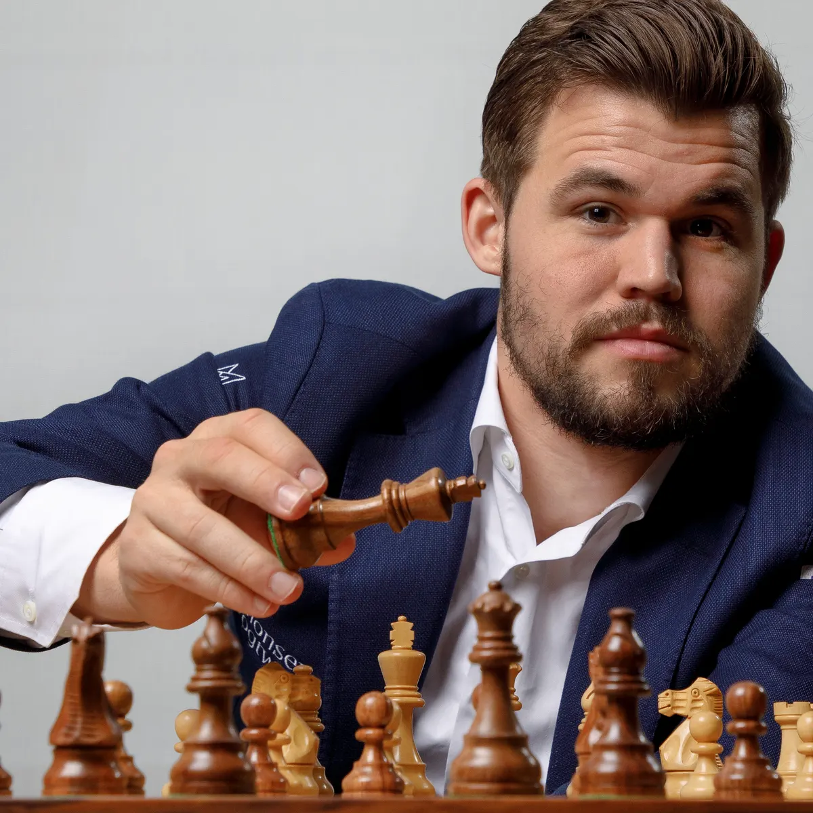

5 najsławniejszych szachistów świat
Magnus Carlsen

Magnus Carlsen to norweski szachista urodzony 30 listopada 1990 roku w Tonsbergu, Norwegia. Jest jednym z najbardziej utalentowanych i dominujących graczy szachowych we współczesnym świecie. Carlsen zdobył tytuł mistrza świata w wieku zaledwie 22 lat, co uczyniło go jednym z najmłodszych mistrzów w historii.
Oto kilka kluczowych informacji na temat Magnusa Carlsena:
Carlsen zaczął grać w szachy w wieku 5 lat, a już w wieku 13 lat został arcymistrzem, co uczyniło go jednym z najmłodszych arcymistrzów w historii.
W 2013 roku zdobył tytuł mistrza świata, pokonując obrońcę tytułu Viswanathana Ananda. Od tego czasu utrzymuje się jako lider światowej elity szachowej.
Jego styl gry jest znany z elastyczności i zdolności dostosowywania się do różnych sytuacji na szachownicy.
Carlsen jest uważany za mistrza w grze pozycyjnej i strategicznej, a także za doskonałego taktyka.
Carlsen przez wiele lat utrzymywał się na szczycie światowego rankingu Elo, który jest używany do oceny umiejętności szachistów. Jego wysoki ranking potwierdza jego dominację wśród najlepszych graczy.
Przez wiele lat Carlsen skutecznie bronił tytułu mistrza świata, pokonując silnych przeciwników, takich jak Anand, Sergey Karjakin i Fabiano Caruana.
Poza szachami, Carlsen wykazywał zainteresowanie innymi dziedzinami, takimi jak biznes i polityka. Jest także ambasadorem dobrej woli UNICEF.
Carlsen jest zaangażowany w rozwijanie szachów i popularyzację tej gry. Stworzył aplikację "Play Magnus", która umożliwia użytkownikom rywalizację z wirtualną wersją samego Carlsena w różnych przedziałach wiekowych.
Magnus Carlsen jest nie tylko znakomitym szachistą, ale także charakteryzuje go charyzma i wszechstronność, co przyczyniło się do zwiększenia popularności szachów na całym świecie.
Władimir Kramnik

Władimir Kramnik to rosyjski szachista, urodzony 25 czerwca 1975 roku w Tuapse, Rosja. Jest jednym z najwybitniejszych graczy w historii szachów, zdobywcą tytułu mistrza świata i jednym z niewielu, którzy pokonali legendarnego Garry'ego Kasparova w meczu o mistrzostwo świata. Oto kilka kluczowych informacji na temat Władimira Kramnika:
Kramnik szybko zdobył uznanie jako młody talent w świecie szachowym. W 1992 roku stał się arcymistrzem, a rok później znalazł się w czołowej dziesiątce rankingu światowego.
Jednym z najbardziej znanych momentów w karierze Kramnika było zwycięstwo nad Garrym Kasparovem w 2000 roku w meczu o mistrzostwo świata. Kramnik zdobył tytuł i przerwał trwającą od 15 lat serię zwycięstw Kasparova.
Władimir Kramnik był mistrzem świata w szachach w latach 2000–2007. Stracił tytuł po porażce w meczu z Wyszwanathanem Anandem.
Kramnik słynie z głębokiej strategii i zdolności do prowadzenia partii na różne sposoby. Jego styl gry charakteryzuje się solidnością i kreatywnością.
Kramnik wnosił znaczący wkład do teorii otwarć szachowych, wnosząc nowe pomysły i innowacje do znanych linii otwarć.
Po utracie tytułu mistrza świata, Kramnik pozostał aktywnym graczem i brał udział w wielu prestiżowych turniejach.
W 2019 roku Władimir Kramnik ogłosił wycofanie się z gry profesjonalnej, kończąc tym samym swoją znakomitą karierę szachistyczną.
Po zakończeniu kariery zawodniczej Kramnik zaangażował się w różne działania społeczne związane ze szachami, w tym w edukację szachową.
Władimir Kramnik pozostanie w historii szachów jako jeden z najwybitniejszych graczy i zdobywców tytułu mistrza świata, który pokonał jednego z największych szachistów wszech czasów.
Garry Kasparow

Garry Kasparow to rosyjski szachista, jeden z największych graczy w historii szachów. Urodził się 13 kwietnia 1963 roku w Baku, w ówczesnym Związku Radzieckim (obecnie Azerbejdżan). Kasparow zdobył tytuł najmłodszego mistrza świata w historii i był dominującą postacią w światowych szachach przez wiele lat. Oto kilka kluczowych informacji na temat Garry'ego Kasparova:
Kasparow zwrócił uwagę na siebie jako utalentowany szachista już w bardzo młodym wieku. W wieku 15 lat stał się najmłodszym mistrzem Związku Radzieckiego.
W 1985 roku, w wieku 22 lat, Garry Kasparow zdobył tytuł mistrza świata, pokonując Anatolija Karpowa. Stał się najmłodszym mistrzem świata w historii, co przyczyniło się do uznania go za jednego z najwybitniejszych talentów szachowych.
Kasparow utrzymał tytuł mistrza świata przez wiele lat, broniąc go w serii meczów przeciwko różnym przeciwnikom. Jego agresywny i kreatywny styl gry przyczynił się do uznania go za jednego z najlepszych szachistów wszech czasów.
W 1996 i 1997 roku Kasparow zmierzył się z komputerem IBM Deep Blue w serii meczów. W 1997 roku przegrał jeden z meczów, co było przełomowym momentem w historii szachów, pokazującym potencjał komputerów w grze szachowej.
Po zakończeniu kariery szachowej, Garry Kasparow zaangażował się w politykę w Rosji i stał się znany jako krytyk reżimu Władimira Putina. Był także aktywny w działalności społecznej, promując edukację szachową na całym świecie.
Kasparow napisał wiele książek, w tym autobiografię i książki o strategii szachowej, które zdobyły uznanie wśród szachistów i miłośników szachów.
Garry Kasparow pozostaje jedną z najbardziej wpływowych postaci w historii szachów, a jego wpływ na rozwój tej gry oraz jego zaangażowanie w sprawy społeczne i polityczne są niezaprzeczalne.
Viswanathan Anand

Viswanathan Anand, znany również jako Vishy Anand, to indyjski szachista, urodzony 11 grudnia 1969 roku w Mayiladuthurai, w stanie Tamilnadu, Indie. Jest jednym z najwybitniejszych graczy szachowych w historii, a jego kariera obejmuje wiele sukcesów na arenie międzynarodowej. Oto kilka kluczowych informacji na temat Viswanathana Ananda:
Anand wykazywał talent do szachów od młodego wieku. W 1987 roku został pierwszym Indusem, który zdobył tytuł arcymistrza.
Viswanathan Anand zdobył tytuł mistrza świata w 2000 roku, pokonując Alexandra Chalifmana. Później bronił swojego tytułu w kolejnych latach, zwyciężając w meczach z rywalami takimi jak Rusłan Ponomariow, Władimir Kramnik i Boris Gelfand.
Anand był wielokrotnie sklasyfikowany na szczycie listy rankingowej FIDE, co potwierdza jego pozycję jako jednego z najlepszych graczy na świecie.
Jego styl gry charakteryzuje się elastycznością i zdolnością do dostosowywania się do różnych sytuacji na szachownicy. Jest uznawany za gracza o silnym poczuciu taktyki i zdolności do rozwiązywania problemów na planszy.
Anand uczestniczył w wielu meczach mistrzowskich o tytuł mistrza świata, zarówno wygrywając, jak i broniąc swojego tytułu w konkurencji z innymi szachistami światowej klasy.
Reprezentując Indie, Anand uczestniczył w wielu olimpiadach szachowych, zdobywając dla swojego kraju liczne medale.
Poza grą w szachy, Anand zaangażowany jest w działalność społeczną i edukację szachową w Indiach. Jego wkład w promocję szachów w kraju jest ważny dla rozwoju tej dyscypliny w Indiach.
Viswanathan Anand pozostaje jedną z najważniejszych postaci w światowych szachach, a jego wpływ na rozwój tej gry w Indiach i globalnie jest ogromny.
Bobby Fischer
Bobby Fischer, pełnym imieniem Robert James Fischer, był amerykańskim szachistą i jednym z najwybitniejszych graczy w historii tej gry. Oto kilka kluczowych informacji na temat Bobby'ego Fischera:
Bobby Fischer urodził się 9 marca 1943 roku w Chicago, Illinois, USA. Jego matka była nauczycielką, a ojciec biologiem i pisarzem.
Fischer wykazywał ogromne zdolności szachowe w bardzo młodym wieku. W wieku 14 lat został najmłodszym mistrzem Stanów Zjednoczonych.
Największy sukces Fischer osiągnął w 1972 roku, kiedy pokonał Borisa Spasskiego w meczu o mistrzostwo świata, stając się pierwszym Amerykaninem, który zdobył ten tytuł. Mecz ten, znany jako "Mecz stulecia", przyciągnął ogromne zainteresowanie mediów i publiczności na całym świecie.
Fischer zyskał sławę dzięki swojemu agresywnemu i kreatywnemu stylowi gry. Był uznawany za jednego z najbardziej utalentowanych szachistów w historii, a jego partie były często spektakularne.
Po zdobyciu tytułu mistrza świata, Fischer wycofał się z profesjonalnych szachów na ponad dekadę. Później zaangażował się w działalność polityczną i wyrażał kontrowersyjne poglądy, co doprowadziło do sporów z władzami szachowymi.
Problemy Prawne i Wyjście z Izolacji:
Fischer popadł w problemy prawne związane z naruszeniem sankcji wobec Jugosławii podczas meczu rewanżowego z Borisem Spasskim w 1992 roku. Spędził większość ostatnich lat życia na wygnaniu w Islandii.
Bobby Fischer zmarł 17 stycznia 2008 roku w Reykjaviku, na Islandii. Jego śmierć zakończyła burzliwe życie legendarnego szachisty.
Bobby Fischer pozostaje jedną z najbardziej ikonicznych postaci w historii szachów, a jego sukcesy i kontrowersje sprawiły, że stał się niezapomnianym bohaterem tego sportu.
Możliwość rozegrania ze mną partii
Dziękuję za odwiedzenie mojej strony